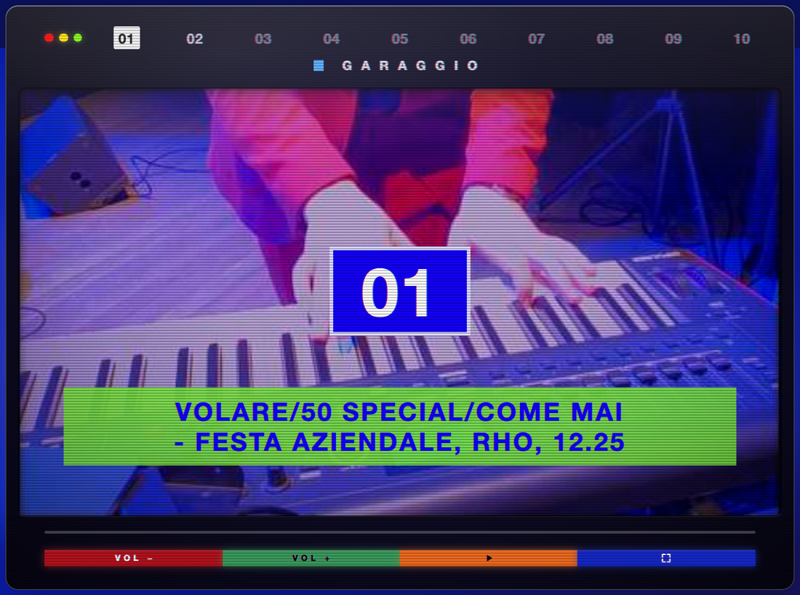

Un televisore con la grafica di youtuyoutuyou (televideo su un vecchio schermo catodico) che riproduce i video di YouTube sul sito. Fino al clic si vede solo la copertina: la pagina resta leggera.

Per un singolo link di YouTube scegli l'aspetto con il segno all'inizio della didascalia, come 🛍️ per il merch (sezione 19).
| In Notion | Didascalia | Sul sito |
|---|---|---|
| Segnalibro di YouTube | niente, oppure 👁️ testo | Anteprima in stile Quick Look (come oggi) |
| Segnalibro di YouTube | 📺 oppure 📺 2.5 | Televisore |
| Video incorporato | niente | Player normale di YouTube (come oggi) |
| Video incorporato | 👁️ testo | Anteprima con copertina e titolo del video |
| Video incorporato | 📺 oppure 📺 2.5 | Televisore |
Il testo dopo 📺 va nel riquadro blu al centro (per esempio «2.5»). Con più canali nel riquadro c'è sempre il numero del canale.
Dopo il clic il televisore mostra NO SEGNALE e, sulla fascia verde, il motivo. Un secondo clic in qualsiasi punto del video lo apre su YouTube, in una nuova scheda. Prima del clic resta sempre la copertina normale.
| Scritta sul televisore | Perché succede |
|---|---|
| INCORPORAMENTO DISATTIVATO SU YOUTUBE | Su YouTube il video non si può guardare su altri siti. Succede spesso con canzoni di altri autori (cover): chi ne ha i diritti permette di vederle fuori da YouTube solo con la sua pubblicità, e chi usa un blocco pubblicità vede questo errore. Gli altri visitatori lo vedono normalmente. |
| VIDEO PRIVATO O RIMOSSO | Il video è privato, è stato cancellato o il link è sbagliato. |
| YOUTUBE NON RAGGIUNGIBILE | Connessione assente o YouTube bloccato dalla rete. |
Da aggiungere al riepilogo della sezione 28.
| Segno | Dove si scrive | Risultato | Sez. |
|---|---|---|---|
| 📺 | Icona o prima riga del callout, link di YouTube dentro | Televisore con un canale per ogni link (fino a 10) | 29, 30 |
| 📺 📺 2.5 | Didascalia di un segnalibro o di un video di YouTube | Televisore con un solo video (testo nel riquadro blu) | 29 |
| 👁️ testo | Didascalia di un video di YouTube incorporato | Anteprima in stile Quick Look con copertina e titolo | 29 |
| ?t=90 ?t=1m30s | In fondo al link di YouTube | Il video parte da quel punto | 29 |